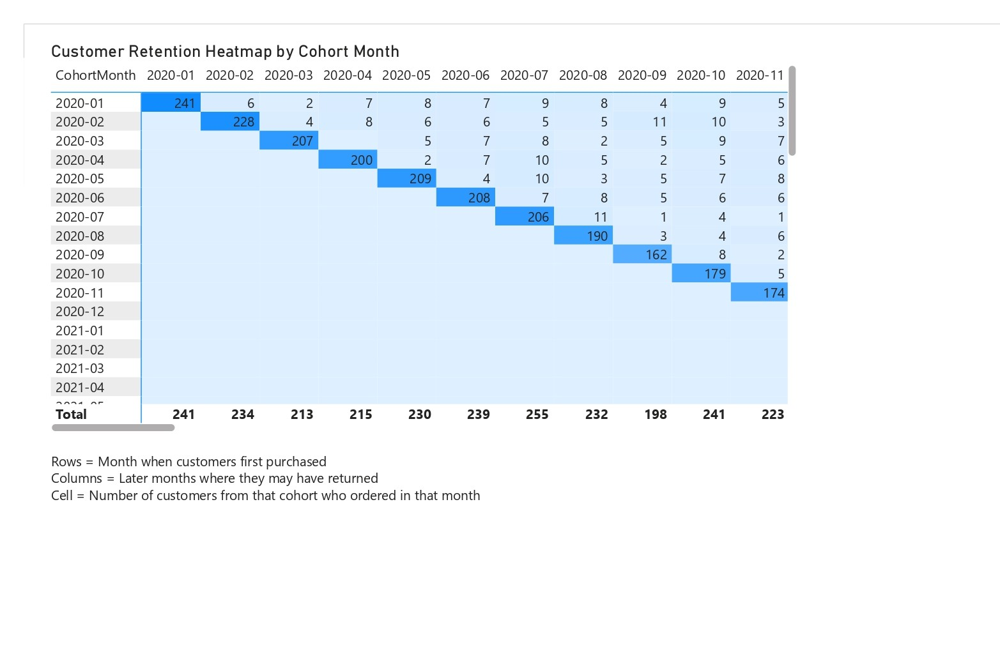

Project Overview
This comprehensive SQL analysis examines order and sales data, customer behavior, payment statuses, and provides detailed reporting insights for Alt-Mobility's business operations.
Data Sources
- Customer Orders Dataset
- Payments Dataset
- Order Status Tracking
Analysis Focus
- Revenue Analysis
- Customer Segmentation
- Payment Processing
- Retention Metrics
Analysis Tasks
Task 1: Order and Sales Analysis
Objectives:
- Calculate order counts by status
- Analyze total revenue from completed orders
- Evaluate monthly revenue trends
Key Metrics: Order status distribution, revenue trends, completion rates
Task 2: Customer Analysis
Objectives:
- Identify repeat customers
- Segment customers by spending patterns
- Track new customer acquisition
Task 3: Payment Status Analysis
Objectives:
- Investigate payment success/failure rates
- Analyze payment method distribution
- Identify payment processing trends
Key Insights: Payment reliability, method preferences, processing efficiency
Task 4: Order Details Report
Objectives:
- Combine order and payment data
- Create comprehensive reports
- Provide detailed order insights
Output: Unified reporting dashboard with payment details
Customer Retention Visualization
Cohort Analysis
This visualization shows how many customers from each cohort returned to make purchases in future months. Darker colors indicate months with higher repeat purchases.

Key Findings:
- Cohort-based retention patterns clearly visible
- Darker heatmap areas show stronger customer loyalty
- Monthly progression tracking for each customer group
- Actionable insights for retention strategy improvement
Key Business Insights
Revenue Optimization
Monthly revenue analysis reveals seasonal patterns and growth opportunities for strategic planning.
Customer Segmentation
Clear distinction between Premium, Regular, and Occasional customers enables targeted marketing strategies.
Payment Processing
Payment method analysis helps optimize transaction success rates and customer experience.
Retention Strategy
Cohort analysis provides actionable insights for improving customer lifetime value and reducing churn.